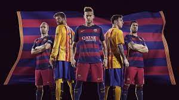
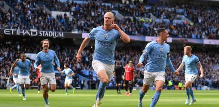
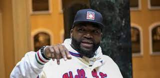
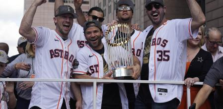

Founded in 1899 by a group of Swiss, Catalan, German, and English footballers led by Joan Gamper
Manchester City was formed in 1880 but had different names until they became Manchester City in 1894.
In 1901, the league created a franchise in Boston, called the "Boston Americans", to compete with the National League team there.
The team began with the name of the Colt . 45s in 1962 and changed their name to the "Astros" in 1965 when they began playing in the Astrodome.
